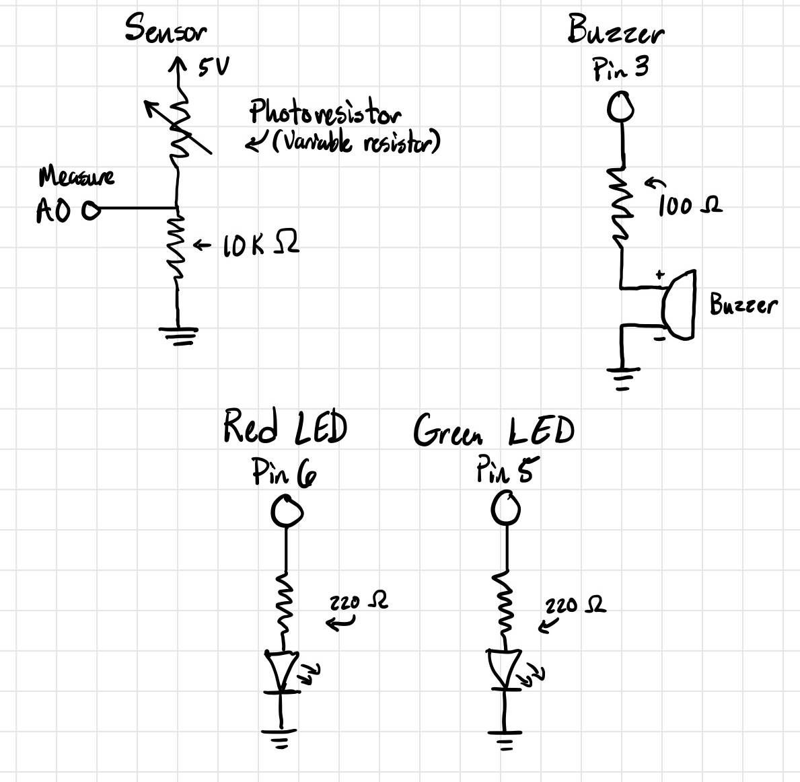
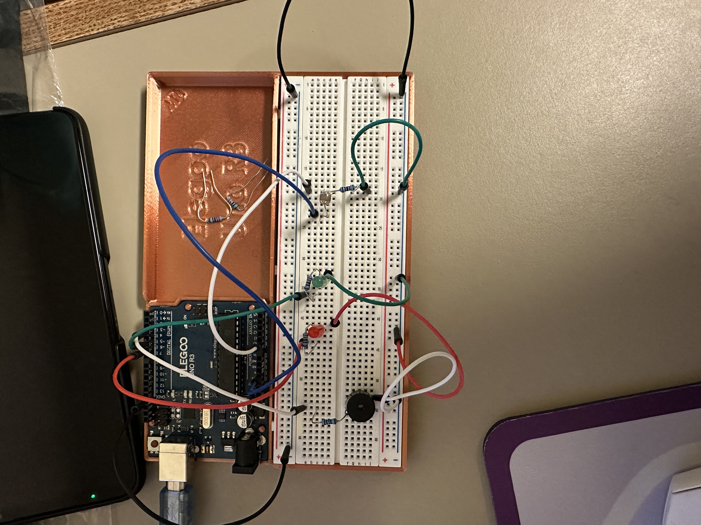
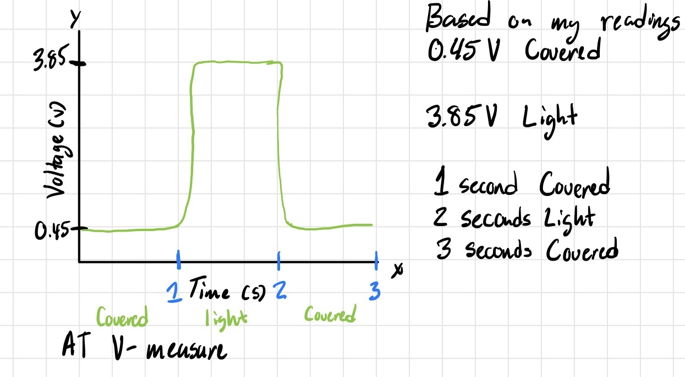

Assignment 3: Input Output!
Overview
Creating a circuit using a photoresistor in a voltage divider to change the state of the buzzer and
turn it on or off. Integrating a red and green LED to help the user calibrate the minimum and
maximum sensor values during the 5 second period during the initial set up. Code is executed
through arduino and is run and connected with a breadboard. A buzzer makes a beep when the mapped
value is above 200 with the red and green LEDs getting brighter or dimmer alongside the corresponding mapped value.
Schematics and Breadboard Circuitry


The shown schematic and circuitry displays a buzzer, 2 LEDs (Red and Green) and a photoresistor (Left to right).
Their respective pins are photosensor (5V and A0), buzzer (Pin 3), green LED (Pin 5), and red LED (Pin 6) with some corresponding colored wires.
Note: The buzzer includes a 100Ω resistor connected to the circuitry based on a schematic for the buzzer found online.
The following information was used to understand why 10kΩ was chosen for the voltage divider for R2 and further answers a question below:
Based on some measurements when using the provided multimeter when exposed to the light of the room, it measured 3kΩ
and when covered measured 100kΩ. These values were taken based on how low and high I was able to obtain a value after stabilizing.
Using the equation Vout = Vin * R2 / (R1 + R2): Subbing in those values using R2 as 10kΩ.
When exposed to light: Vout = 5 * 10kΩ / (3kΩ + 10kΩ) = 3.85V approximately
if R1 and R2 are switched while exposed to light: Vout = 5 * 3kΩ / (10kΩ + 3kΩ) = 1.15V approximately
When covered: Vout = 5 * 10kΩ / (100kΩ + 10kΩ) = 0.45V approximately
If R1 and R2 are switched while covered: Vout = 5 * 100kΩ / (10kΩ + 100kΩ) = 4.55V approximately
With this we can check if we we meet the 40mA pin limit for the arduino using Ohm's law (V=IR) with the lowest resistance. I = (5V/13kΩ) = 0.38mA, this is
safe for the arduino to run. We also need to keep in mind that as the resistance goes down to 0 ohms we need an R2 that ensures that the current
stays below 40mA.
Arduino Code Snippet (.ino)
// Code uses examples from in class demonstrations, slides and other external sources
// Example code sources used through this assignment:
// https://docs.arduino.cc/built-in-examples/analog/Calibration/
// https://www.ardumotive.com/how-to-use-a-buzzer-en.html
const int sensorPin = A0; // Photoresistor Pin
const int buzzerPin = 3; // Buzzer Pin
const int greenLedPin = 5; // Green LED Pin
const int redLedPin = 6; // Red LED Pin
int sensorValue = 0; // The sensor value given
// Values given to help with calibration, analog calibration
int sensorMin = 1023; // Minimum sensor value given
int sensorMax = 0; // Maximum sensor value given
// Section integrates parts of the arduino example calibration code
void setup() {
// put your setup code here, to run once:
pinMode(sensorPin, INPUT); // Makes photoresistor pin as input
pinMode(buzzerPin, OUTPUT); // Makes buzzer pin as output
pinMode(greenLedPin, OUTPUT); // Makes green LED as output
pinMode(redLedPin, OUTPUT); // Makes red LED as output
Serial.begin(9600); // Monitors input and output of the code for visualization and debugging
Serial.print("Converting sensor values to modified mapped values"); // This will tell us the conversion of the sensor value in respect to an adjusted value between (0, 255)
digitalWrite(greenLedPin, HIGH); // Green LED turns on to indicate calibration phase
// Calibrates for five seconds the min and max sensor values during the set up
while (millis() < 5000) {
sensorValue = analogRead(sensorPin); // Reads the value of the sensor based on how much light the photoresistor is exposed to
// Records the maximum sensor value detected
if (sensorValue > sensorMax) {
sensorMax = sensorValue; // If sensor value is higher, makes it the new highest value
}
// Records the minimum sensor value detected
if (sensorValue < sensorMin) {
sensorMin = sensorValue; // If sensor value is less, makes it the new lowest value
}
}
// Indicating that the calibration phase is over
digitalWrite(greenLedPin, LOW); // Green LED turns off
delay(500); // Delays by half a second
// Red LED turns on for a second to indicate calibration phase is over
digitalWrite(redLedPin, HIGH); // Red LED turns on
delay(1000); // Delays by a second
digitalWrite(redLedPin, LOW); // Red LED turns off
}
int mappedValue; // Placeholder for storing the mapped value in main loop
// Section integrates parts from in-class code example and external code sources (buzzer code)
void loop() {
// put your main code here, to run repeatedly:
sensorValue = analogRead(sensorPin); // Reads sensor value
sensorValue = constrain(sensorValue, sensorMin, sensorMax); // Constrains sensor values between min and max sensor values
// Prints sensor value on monitor
Serial.print("Sensor Value: ");
Serial.print(sensorValue);
mappedValue = map(sensorValue, sensorMin, sensorMax, 0, 255); // Current sensor values readjusted for analog values (0, 255)
// Prints mapped value on monitor
Serial.print("\t Mapped Value: ");
Serial.println(mappedValue);
// Brightens and dims the LEDs based on the mapped value that coincides with (0, 255)
analogWrite(greenLedPin, mappedValue);
analogWrite(redLedPin, mappedValue);
// Sample code used from ardumotive to turn on the buzzer
// Makes a beep if mapped value is above 200
if (mappedValue > 200) {
tone(buzzerPin, 1000); // Does a beep at 1KHz
} else {
noTone(buzzerPin); // Turns the beep off
}
}
Circuit's Operation
Gif on the left shows how the serial monitor is reading the information which is then translated
to output the mapped values (0, 255) which help determine how bright or dim the LEDs need to be
and when to make the buzzer turn on, in this case its when the mapped value is higher than 200.
Serial Monitor Code Snippet
Converting sensor values to modified mapped values
Sensor Value: 642 Mapped Value: 192
Sensor Value: 635 Mapped Value: 188
Sensor Value: 628 Mapped Value: 183
Sensor Value: 624 Mapped Value: 181
Sensor Value: 621 Mapped Value: 179
Sensor Value: 620 Mapped Value: 178
A quick snippet of what potential sensor values (10-bit values) must convert to, in order to align with the 8-bit analog input
Questions and Answers
1: In your voltage divider, can the variable resistor be either R1 or R2 or does it need to
be one or the other? Justify your answer with example calculations.
Based on the calculations done earlier. The variable resistor can be placed in either the R1 or R2 position of the voltage divider.
The only problem with placing it in R2 is making sure the total resistance of the series is high enough that it stays under arduino's 40mA limit,
which is where the 10kΩ comes in. Depending on which you choose changes how it correlates to the output voltage, if the variable resistor is placed in R2, the logic's
function will be inverted. For example, my LEDs and buzzer only turn on when exposed to the light due to the photoresistor being placed at R1,
but turns on when the photoresistor is covered and placed in R2. This reflects the values we got based on the calculations for the original placement at R1 (0.45V-3.85V),
and switched placement at R2 (4.55V-1.15V). Voltage goes up with light (R1 placement) and voltage goes down with light (R2 placement).
2: Draw a graph where the x-axis is time and the y-axis is voltage. Plot the voltage at V-measure of your voltage divider of your shared gif.

Not an accurate representation of the shared gif, realistically should follow the same premise with the voltage either being high or low
with some slight dips and hills depending if something passes over it and casts a shadow which can change the voltage. However, kept it as covered and exposed to light
for simplicity, although it is rather a quick change, it does take a bit to stabilize so there is some curve to it between states.
3: AnalogWrite and analogRead are respectively 8-bit and 10-bit values. Imagine you had 10-bit PWM and a 16-bit analog-to-digital converter instead. How would this
change your map() code? Explain your answer.
Not much will logically change, if it follows the original 8-bit and 10-bit way, the 16-bit will just take the place of the 10-bit
and the 10-bit will take the place of the 8-bit. With 2^16 = 65536 and 2^10 = 1024, an adjusted map() code will
be mappedValue = map(inputValue, 0, 65535, 0, 1023). We have to minus one to both since we also have to consider 0,
other than that its basically the same as the 8-bit and 10-bit version, just adjusted.
Other Help/Tools Used:
AI did help me troubleshoot and understand some of the logic and information that was needed to go about answering the information
and, I still really only use it as a tool to enhance my understanding of concepts and topics overall.